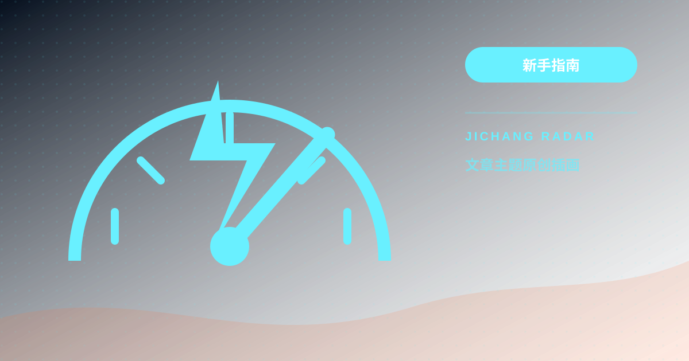
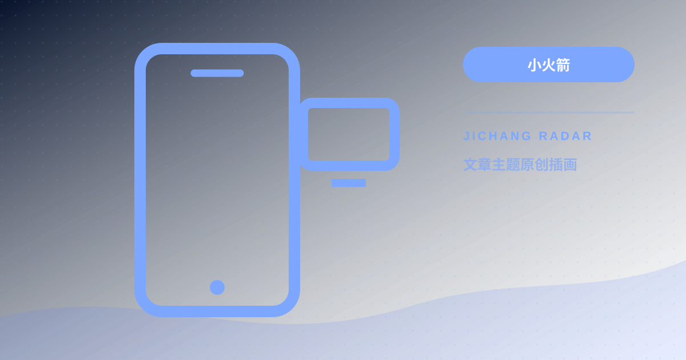
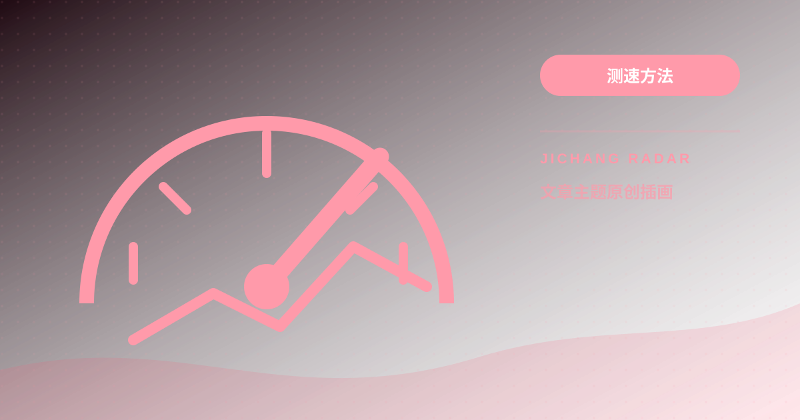
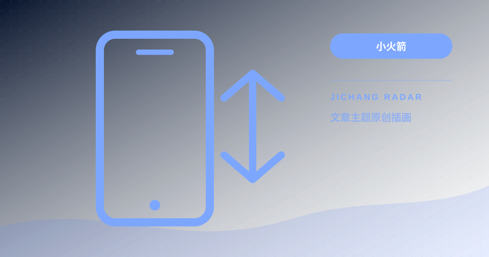

新手指南01
新手指南01ROUTER COMPATIBILITY ARCHIVE
文章专栏总览
您正在通过历史兼容路由 /article 访问。全站共收录 48 篇网络与客户端技术专栏，系统支持根据 URL 的 ?post= 标识原地直读并渲染正文，绝不发生任何刷新或循环跳转。
全部文章
前往分类筛选专区 →点击卡片直接阅读
新手指南01 小火箭02
小火箭02 小火箭03
小火箭03 小火箭04
小火箭04 小火箭05
小火箭05 客户端06
客户端06 客户端07
客户端07 客户端08
客户端08 客户端09
客户端09 客户端10
客户端10 测速方法11
测速方法11 测速方法12
测速方法12 测速方法13
测速方法13 隐私安全14
隐私安全14 隐私安全15
隐私安全15 隐私安全16
隐私安全16 隐私安全17
隐私安全17 新手指南18
新手指南18 新手指南19
新手指南19 新手指南20
新手指南20 隐私安全21
隐私安全21 测速方法22
测速方法22 测速方法23
测速方法23 新手指南24
新手指南24 客户端25
客户端25 新手指南26
新手指南26 隐私安全27
隐私安全27 新手指南28
新手指南28 新手指南29
新手指南29 新手指南30
新手指南30 隐私安全31
隐私安全31 客户端32
客户端32 新手指南33
新手指南33IPLC 专线与 IEPL 中转有什么区别？机场线路原理解析与挑选方法
机场宣发的 IPLC 专线、IEPL 专线、BGP 中转到底有何不同？本文用通俗语言拆解跨境专线原理与高性价比挑选法则。
继续阅读 → 小火箭34
小火箭34小火箭节点全部显示超时或 -1ms？常见原因分析与一键修复教程
Shadowrocket 节点列表突然大面积显示“超时”或“-1ms”，无法联网？本文总结 6 种最常见的诱因与对应的快速解决办法。
继续阅读 → 小火箭35
小火箭35小火箭与 Clash 后台耗电过快、频繁断线怎么办？iOS与Android保活与省电优化
开启代理客户端后手机发热、电池消耗极快或锁屏后自动断线？本文拆解 iOS 与 Android 系统的后台机制与优化配置。
继续阅读 → 测速方法36
测速方法36Netflix、Disney+ 与 ChatGPT 提示 1020/403？原生 IP 解锁检测与避坑
为什么节点能正常上网，打开 Netflix 却只有自制剧，登录 ChatGPT 报 1020/403 错误？本文讲解 IP 风控机制与解锁检测技巧。
继续阅读 →Clash Verge Rev 完整使用教程：从安装、内核切换到高级分流与自启动配置
Clash for Windows 停更后，Clash Verge Rev 凭借现代化的界面与强大的 Mihomo 内核成为桌面端首选。本文详解 Windows 与 macOS 完整上手与高级配置。
继续阅读 →
新手指南38Hysteria 2 与 TUIC 协议全解析：UDP 暴力加速原理、抗封锁能力与端口跳跃实操
在晚高峰恶劣网络与高丢包环境下，基于 UDP 的 Hysteria 2 与 TUIC 为何能跑满千兆带宽？本文深入拆解其底层流控机制与避坑实操。
继续阅读 →软路由与 OpenWrt 透明代理配置指南：PassWall、OpenClash 与全屋智能设备科学分流
让手机、电视盒子、智能音箱免装客户端实现全屋网络分流。本文全面对比 OpenClash 与 PassWall，并提供手把手防循环与防漏水配置步骤。
继续阅读 →
小火箭40Apple TV 代理客户端怎么选？Shadowrocket 与 sing-box tvOS 版安装及 4K 影院配置
tvOS 17 正式开放 VPN 接口后，Apple TV 终于无需软路由即可独立科学分流。本文详解 Shadowrocket 与 sing-box 在电视大屏上的配置与遥控技巧。
继续阅读 → 隐私安全41
隐私安全41在线订阅转换安全吗？自建 Subconverter 教程与订阅 Token 防偷盗防投毒指南
将机场订阅链接粘贴到公共订阅转换网站，无异于将你的账号凭证与所有节点完全交由第三方。本文曝光后门风险并给出自建安全方案。
继续阅读 → 隐私安全42
隐私安全42WebRTC 穿透与 DNS 泄漏彻底防御：用专业工具检测并封堵真实公网 IP 暴露漏洞
开启代理后 IP 已经变了，为什么访问某些安全网站依然能识别你的真实地理位置？本文深挖 WebRTC 与 DNS 泄漏的隐秘通道并提供封堵方案。
继续阅读 → 客户端43
客户端43自建与精细化分流规则教程：GeoSite、GeoIP 搭配域名黑白名单彻底告别误伤国内网
国内网站打不开、微信图片加载慢、外卖定位漂移到海外？根本原因在于分流规则误伤。本文教你如何用现代 Geo 规则库实现无感分流。
继续阅读 →BGP 隧道中转与公网直连有何区别？机场入口机房拓扑、国内跨网结算与选线法则
为什么中转机场比直连机场稳定得多？从移动跨网访问电信出口的延迟陷阱，到国内入口机房内网隧道转发，一文看懂中转核心逻辑。
继续阅读 →跨境电商与 TikTok 运营网络环境搭建：防黑屏、防关联与独享静态原生住宅 IP 避坑
做 TikTok 运营最怕黑屏、零播放与封号。本文从设备底层环境伪装、DNS 纯净度到独享住宅静态 IP 的真实挑选标准进行全链路复盘。
继续阅读 →
测速方法46如何看懂 Speedtest、iperf3 与 PingPlotter：从持续抖动与丢包率识别真假专线
很多用户只看 Speedtest 峰值跑分，却不知道 5% 的丢包就能毁掉一次线上会议或对战体验。本文教你用专业工具看清线路的真实底细。
继续阅读 →
小火箭47小火箭自动化测速与节点故障自动回退实操教程：实现无感故障转移
很多用户使用小火箭时常受困于单节点突发离线或维护导致断流。本文手把手演示如何在小火箭中创建自动测速与故障回退服务器组，配置智能健康检测与容差策略，实现全天候无感自动切换。
继续阅读 →Clash Verge Rev 多订阅合并与负载均衡实操教程：双机场容灾与策略组聚合
单一机场遇到晚高峰拥堵或机房突发维护容易导致电脑全面断网。本文详解如何在 Clash Verge Rev 中借助 Mihomo 核心的扩展配置与策略组聚合，优雅合并多份订阅并实现低延迟负载均衡与自动容灾备份。
继续阅读 →